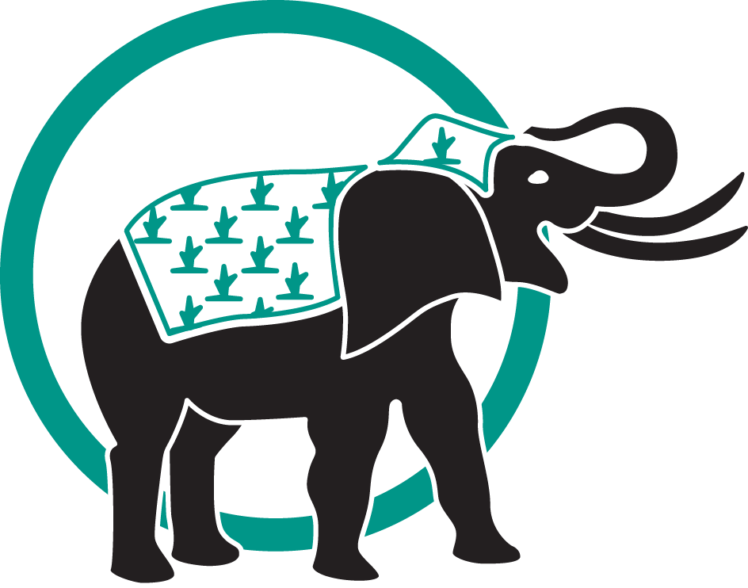
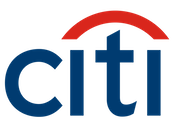
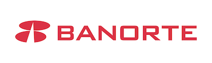
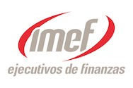
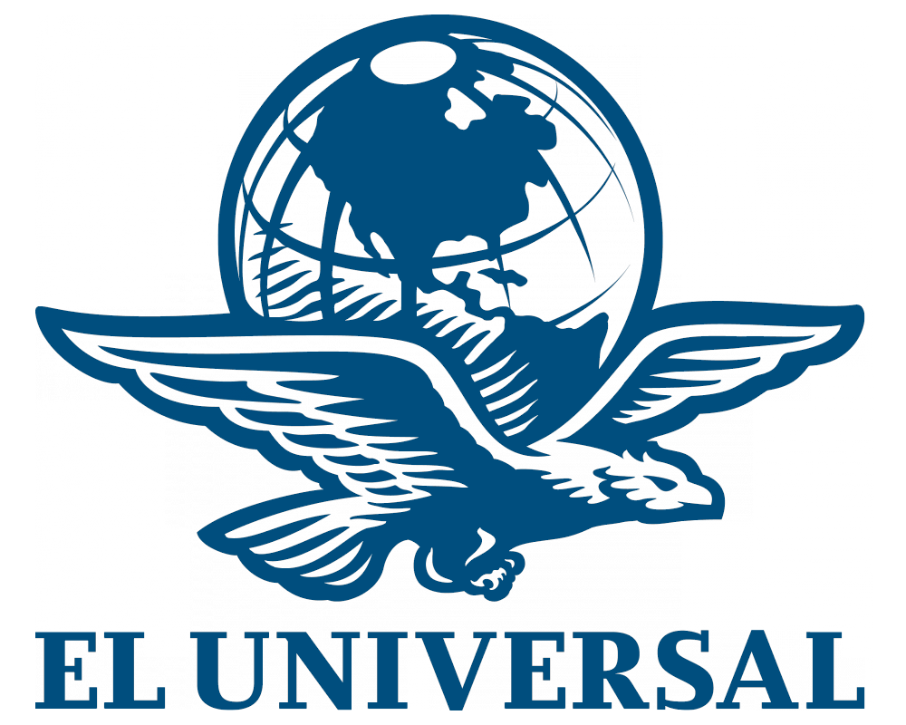

Estudios sobre Valores, Opiniones, Expectativas y Mercados
Acerca de Alduncin y Asociados
Somos una empresa de conocimientos que estudia valores, actitudes, motivaciones, expectativas, opiniones y mercados, y su aplicación en la calidad y productividad de empresas, satisfacción de los clientes, clima laboral y cultura organizacional, imagen institucional, posicionamiento y competitividad, para la toma de decisiones.
Información Corporativa
Misión
Crear valor agregado para nuestros clientes, satisfacer cabalmente sus requerimientos de información con el empleo de los mejores instrumentos y técnicas, al menor costo posible por medio de inovación y experiencia.
Visión
Producir conocimiento e inteligencia sobre los temas de interés para nuestros clientes y en ultima instancia contribuir a conocernos más a nosotros mismos, a nustras organizaciones y empresas para mejorar nuestras comunidades y México.
Logo
Los Elefantes de Ghor
Más allá de Ghor, había una ciudad, todos sus habitantes eran ciegos. Un día se informó al rey que acampaban al pie de las murallas del reino un ejercito con un arma desconocida: Elefantes. El rey mando investigar a sus espías y más inteligentes cortesanos. Los ciegos se infiltraron entre los enemigos y lograron acercarse y palpar los elefantes con, este conocimiento volvieron a reportar sisi descubrimientos. El rey preguntó por la forma y aspecto del elefante: el hombre que había tocado la oreja dijo "Es una cosa grande, rugosa, ancha y gruesa", el que palpó la trompa dijo: "Yo conozco los hechos reales, es un tubo recto y hueco, horrible y destructivo", un tercero que toco sus patas dijo "Es poderoso y firme como un pilar". De esta manera continuaron describiendo y discutiendo entre sí, tratando de lograr determinar la verdadera naturaleza del elefante. Cada uno había palpado solo una de las muchas partes del poderoso animal y sus percepciones eran parciales.
Nunca se pusieron de acuerdo, no pudieron conocer la totalidad ni la manera de defenderse de la amenaza externa. Ghor fue conquistado, hoy sopla el viento sobre el desierto de una ciudad vacía.
Rumi, poeta sufi de Persia, refiere una moraleja: "El conocimiento no es compañero de ciegos". Versión libre del cuento: "El Amurallado Jardín de la Verdad" de Hakim Sanai que murió el año 1150 de nuestra era.
Coda. Todo cuento tiene varios niveles de interpretación, en el esotérico, este habla de la imposibilidad para los humanos de conocer la última causa o el primer principio.

Filosofía Empresarial
El inicio de un nuevo Mileno acelera el curso de la historia. El cambio es cuantitativo y cualitativo. La gloalización implica creciente complejidad e inter relación de todos los fenómenos. La incertidumre y el riesgo acompañan toda empresa. Este es el entorno que vivimos. EN cierta manera los gobiernos, institutciones, empresas, familias y personas enferntan el mismo riesgo del rey de Ghor: Elefantes a los pies de sus murallas, y estas como los servicios tradicionales de inteligencia no responden a los retos. Se necesita nuevo conocimiento, pertinente, económico y oportuno, más allá de los datos y de la sobrecarga de información que confunde la toma de decisiones.
Valores y Principios
En nuestra práctica seguimos al pie de la letra los códigos de ética y los estándares de las organizaciones internacionales a las que pertenecemos: la Asociación Mundial de la Investigación de la Opinión Pública (WAPOR) y la Socieddad Europea para la Investigación de Mercados y de la Opinión Pública (ESOMAR). APlicamos las técnicas más adecuadas y que permiten obtener la información necesaria al más bajo costo. Nuestro propósito es maximizar el valor agregado de nuestros clientes.
Servicios
¿Qué hacemos?
Prestar servicios profesionales de consultoría, coordinación, dirección o ejecución para el diseño, levantamiento, procesamiento, análisis, promoción. difusion o venta de todo tipo de estudios e investigaciones sobre valores, expectativas, opiniones. creencias y actitudes de Ia población. Especialmente de las conductas de los consumidores y / o electores en todo tipo de mencados: formales e informales, monetarios y no monetarios, por medio de encuestas, censos, sondeos, conteos, grupos de enfoque, paneles y de todo tipo de instrumentos estadísticos, de psicología social o de mercadotecnia, y con la aplicación de técnicas económicas, sociológicas, antropológicas, físicas o matemáticas, así como de investigación de operaciones, reingeniería, análisis de sistemas y cibernética.
¿Qué estudios realizamos?
Básicamente nos especializamos en dos grandes temas relacionados: estudios de mercado y organizacionales, y estudios sociopolíticos y electorales.
Especializaciones
Valores, actitudes y motivaciones
Los valores son normas internalizadas que orientan la percepción el pensamiento, las evaluaciones, los juicios y la toma de decisiones de las personas y de la sociedad. Las actitudes y las motivaciones son un reflejo de los valores, las primeras orientan las respuestas conductuales a los estímulos y las segundas articulan las preferencias y nietas en función de lo que valoramos. Alduncin y Asociados ha realizado investigaciones axiológicas por más de 25 años, es uno de los iniciadores de este tipo de estudios en México con bases cuantitativas.
Expectativas y opiniones
La toma de decisiones, sí bien toma en cuenta las experiencias del pasado, se basa en las creencias de lo que se piensa va a suceder. Estas son las expectativas, que se incorporan en las previsiones de la economía moderna. En México realizamos el primer estudio al respecto, que se publica con el título: "Expectativas económicas de líderes empresariales y posición competitiva internacional de las empresas líderes" 1989, edición del Banco Nacional de México. Esta investigación la actualizamos en 1995 para el grupo financiero Scottia Bank-Inverlat.
Calidad y productividad
El Dr. Alduncin fue el primer director de la División de Calidad del Banco Nacional de México (1988-1989). Fue miembro fundador de FUNDAMECA (Fundación Mexicana para la Calidad Total) para la cual realizó varios estudios sobre calidad y productividad de las empresas. Alduncin y Asociados ha realizado estudios sobre Cultura Organizacional y Clima Laboral, con énfasis en la Cultura de Efectividad centrada en el mejoramiento continuo de la calidad y productividad para Grupo NESTLÉ (12 Plantas], BANAMEX, Grupo PROA (Laboratorios Chopo), periódico El Universal, AMIS (Asociación Mexicana de Agencias e Instituciones de Seguros), y la Dirección General de Capacitación (STPS), entre otros.
Satisfacción de cliente
Empresas y gobiernos buscan como último objetivo el satisfacer las expectativas de clientes y ciudadanos, responder estas y las promesas de venta o campaña, se traduce en compras repetidas y lealtad. Hoy día es posible gracias a la estadística y a las técnicas de investigación social por encuesta, saber con un alto grado de confiabilidad lo que opinan los clientes actuales y potenciales, así como los ex clientes, los habitantes y ciudadanos de una localidad, municipio, estado o país, con solo entrevistar una muestra representativa de los mismos. Esto hace posible conocer los fenómenos económicos, sociales y políticos.
Clima laboral y cultura organizacional
Los clientes y el personal son los activos más importantes de toda empresa. El capital humano imagina, crea, produce, transforma y entrega los productos y servicios a los clientes. La cultura de la empresa, que se basa en sus valores, es la piedra de toque de toda acción en ella, tanto de la satisfacción de los clientes, cuanto de la calidad y productividad. De ahí la importancia de conocer el clima laboral y la cultura organizacional, con un enfoque centrado en el quehacer cotidiano y los esfuerzos de mejoría.
Imagen institucional y competitividad
La imagen institucional es la resultante de todas las decisiones y acciones de una empresa u organización. El valor de la marca o el nombre de una empresa o producto es determinante en la confianza que genera, por ende en la lealtad de sus clientes, en sus ventas y en su éxito. El posicionamiento en el mercado, reflejo también de su tamaño y penetración del mismo, influye sobre sus objetivos y estrategias, así como en su competitividad. Todos estos conceptos son susceptibles de medirse y evaluarse, no se reflejan en los estados contables, pero sí en el valor de la empresa, uno de los objetivos de la misma debe ser acrecentarlos. Alduncin y Asociados ha realizado estudios sobre imagen institucional, posicionamiento y competitividad para la Asociación de Bancos México / ABM, para Citibank-Banamex, para la Asociación Mexicana de Instituciones de Seguros / AMIS y para Boreal, entre otros.
Clientes y Proyectos


BANCA, SEGUROS Y FIANZAS
BBVA Bancomer Citi-Bank Banorte
INDUSTRIA, COMERCIO Y SERVICIOS
Alpura Condumex Efectivale

ASOCIACIONES PROFESIONALES
CANACINTRA Club de Roma IMEF
GOBIERNO
Gobierno de Aguascalientes Cámara de Diputados Asamblea Legislativa
PARTIDOS POLÍTICOS
Partido Acción Nacional Partido Revolucionario Institucional Partido de la Revolución Democrática

MEDIOS MASIVOS
El Universal Revista Expansión Revista Letras Libres
UNIVERSIDADES Y CENTROS DE INVESTIGACIÓN
ITAM College Board CONACULTA
ORGANIZACIONES NO LUCRATIVAS
Fundación Teletón ILSI Organización Internacional del Trabajo
Contacto
Dirección
Periférico Sur No. 4225-204, Colonia Jardines en la Montaña, Delegación Tlalpan, Código Postal: 14210, Ciudad de México
Teléfono
5446-9230 al 33
Correos
Dr. Enrique Alduncin Abitia: enrique@alduncin.com
Lic. Cecilia Hassey Perezcano: ceci@alduncin.com
Ing. Austreberto Torres Rodríguez: atorres@alduncin.com